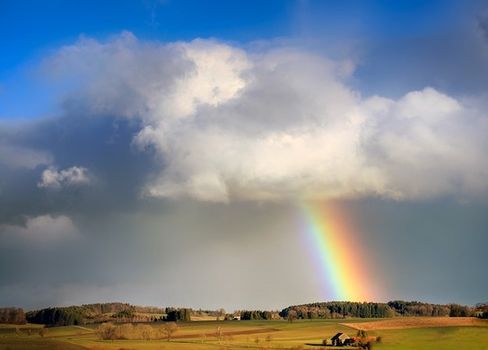

Weather

You can have an interesting conversation with
a child along the following lines:
Where does the rain come
from?
The sky!
But where in the sky? /
What do you notice about the sky when it is raining?
From the clouds.
How do you think the water gets into the
clouds?
This can lead on to the fact that
water evaporates - especially when it is sunny. You could
get them to do a little experiment, by wetting a
non-porous surface (a plate or tile, for example) and
seeing how long it takes to dry out if left in the sun.
Where has the water gone? It disappears into the air as
water vapour, which is invisible.
How does it form a cloud? On a cold day they can form
their own cloud simply by breathing - the water vapour in
their breath condenses into tiny water drops when it hits
the cold air. Notice how much it looks like a small cloud.
That's all a cloud is - a lot of little water droplets. If
it's not a cold day, then you can produce a cloud by
boiling a kettle. If you place a cool surface in the steam
you can show them that water condenses onto it. It gets
colder with height (by about 1C every 150 metres) so water
vapour condenses if it rises high enough, forming clouds.
When enough water builds up in a cloud the droplets grow
heavier and fall as rain.
Clouds can be divided into different types and older
children could try to identify them. You can find a useful
identification guide from the Met Office here.
Which types of clouds produce rain? Younger children could
draw a picture (e.g. of your house) and stick on some
cotton wool for clouds.
Wind is another important feature of the weather. If you
have a weather vane in the garden then children can use
this to see which way the wind is blowing. If not, they
could make a simple weather vane of their own - see this
WikiHow page for instructions. This vane will not be
weather-proof, but they can carry it outside to make a
measurement. You will need a compass to orient the vane,
unless you already know which way is north in your garden,
or you could use the fact that the sun is in the south at
midday (or at 1pm in British Summertime).
Here are some questions for them to explore with their
weather vane. From which direction does the wind blow most
of the time? Does it feel colder when the wind is in the
north and warmer when it comes from the south? Does it
ever blow from the east, and how does it feel then? Do
clouds always seem to move downwind? (It is possible for
the wind at height to differ in direction from the wind on
the ground.) You can judge which clouds are highest by
seeing how fast they move in the wind - the higher the
cloud, the slower it will seem to move. This is especially
striking on a day when high cirrus and low cumulus are
present in the sky together. Of course, investigating the
wind could naturally lead on to a bit of kite flying!